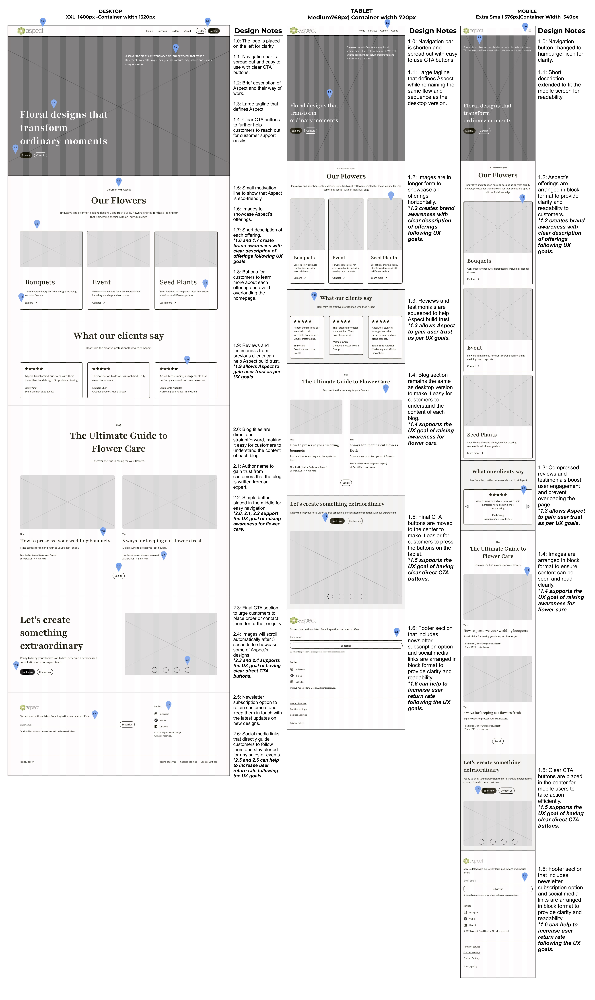
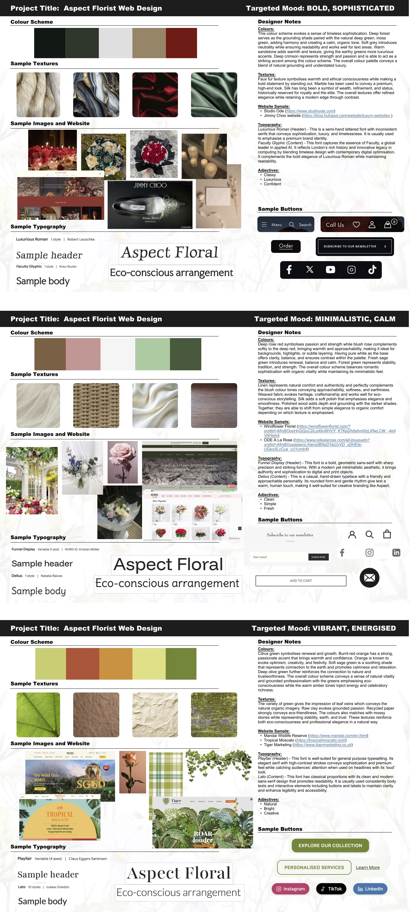

Crafting experiences that feel intuitive, human, and considered.
A look into the process behind one of my UI/UX projects — from early wireframes to the final live product.
When it comes to web design, Yocco advises “if you want users to actually pay attention to your message, make it directly relevant and easy to understand.” (Yocco, V., 2014). With this reference, I personally agree with the advice and think that it is important to capture the audience’s attention by designing a website that is direct and matches with their needs. Hence, I designed Aspect’s website by ensuring that the content is directly relevant.
Mapping the structure before the polish.

Using Figma, I created 3 different versions of the mock website for desktop, tablet, and mobile version, while applying concepts such as rule of thirds, aligning elements using the grid, and varying the composition using alternating asymmetrical and symmetrical.
Setting the tone — colour, type, and texture.

The final moodboard was chosen to represent Aspect as the overall vibrant colour and easy-going fonts scream creativity and elegance which are best suited for Aspect.